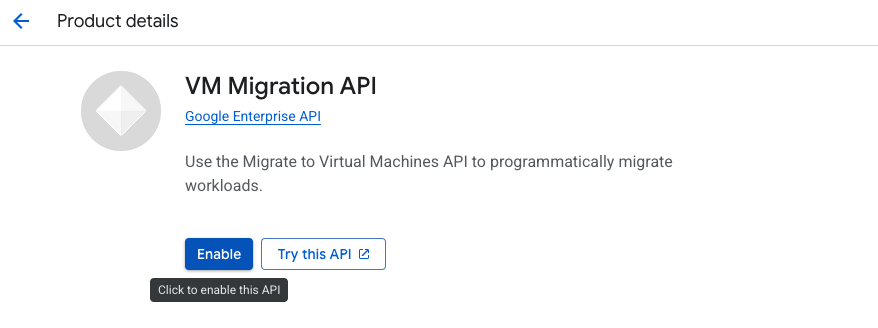
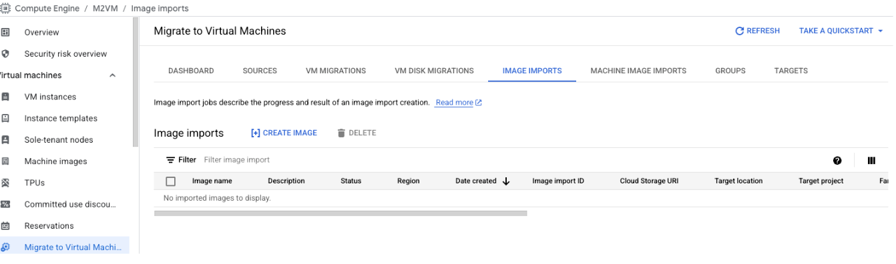
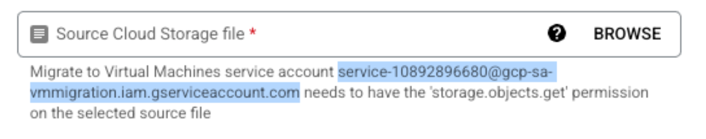
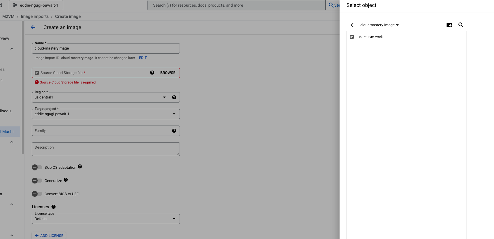

Import the VMDK as a Bootable GCP Image¶
This is the most important step in the migration process. It converts your uploaded .vmdk disk file into a bootable image template that Google Cloud can use to create new virtual machines.
Step 1: Enable the VM Migration API¶
Before you can import an image, you must ensure the VM Migration API (also known as "Migrate to Virtual Machines API") is enabled for your project.
- Navigate to the VM Migration API page in the Google Cloud Console: https://console.cloud.google.com/compute/mfce
- If the API is not already enabled, you will see an Enable button. Click it to activate the API. This may take a moment.

Step 2: Set your Target Project¶
-
In the Google Cloud console, navigate to the Migrate to Virtual Machines section and select the Targets Tab
-
Under the Targets Tab click on Add A Target project.
- For this case select the current working project and click Add
 4. Once done the project is added as part of the list of target projects.
4. Once done the project is added as part of the list of target projects.

Step 3: Navigate to the Image Imports Tab and Click Create Image¶

Step 4 : Create an Image¶
Under the resulting page, enter the Name of the Image, you would like to create i.e cloud-mastery-image
- This will be the name of the final bootable image in GCP.
- Grant the
Storage Object UserIAM role to the VM Migration service account on the public bucket located at https://console.cloud.google.com/storage/browser/cloudmastery-image. -
The service account name will be similar to:
service-10892896680@gcp-sa-vmmigration.iam.gserviceaccount.com. Remember to copy it.  -
Source:
- Click BROWSE.
- Navigate to your Google Cloud Storage bucket (
cloudmastery-image). - Select the
.vmdkfile you uploaded earlier:ubuntu-vm.vmdk. - Click SELECT.
-
Region:
us-central1- It's best practice to import the image into the same region where you plan to deploy the VM.
-
Target project:
eddie-ngugi-pawait-1- Ensure this is set to the correct project where you want the image to reside.
- For our case, its the same project we are working on.
-
Family:
ubuntu-2204- Grouping images into families makes them easier to manage.
-
Licenses: Leave this as Default. GCP will automatically detect the OS.
-
Advanced options (leave as default):
- Do not check "Skip OS adaptation," "Generalize," or "Convert BIOS to UEFI" unless you have a specific reason. The import tool handles these conversions well automatically.

Click CREATE.
Import in Progress
The image import process will begin. This can take anywhere from 10 to 30 minutes, or longer, depending on the size of the disk image. You can monitor the progress on the Image imports tab.
Step 5: Validation¶
You newly imported image should be like so below

Image Import Complete
Once the status shows as "Succeeded," you have successfully converted your on-prem disk into a reusable, bootable image in Google Cloud.
What's Next¶
Now that you have a custom bootable image, you're ready for the final steps. In the next phase, you'll use this image to create a new VM instance in GCP.